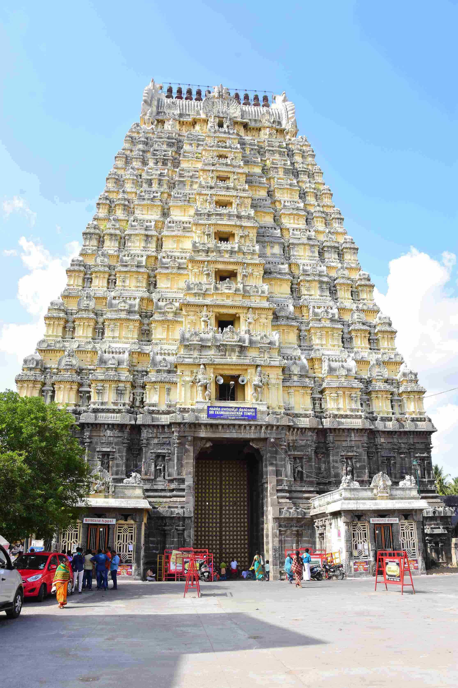
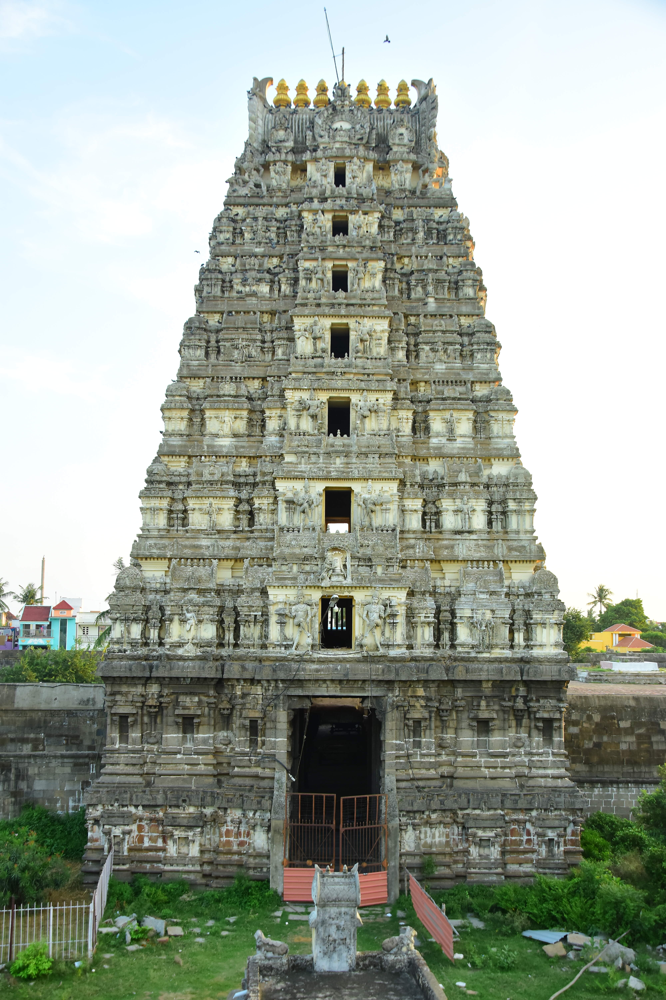
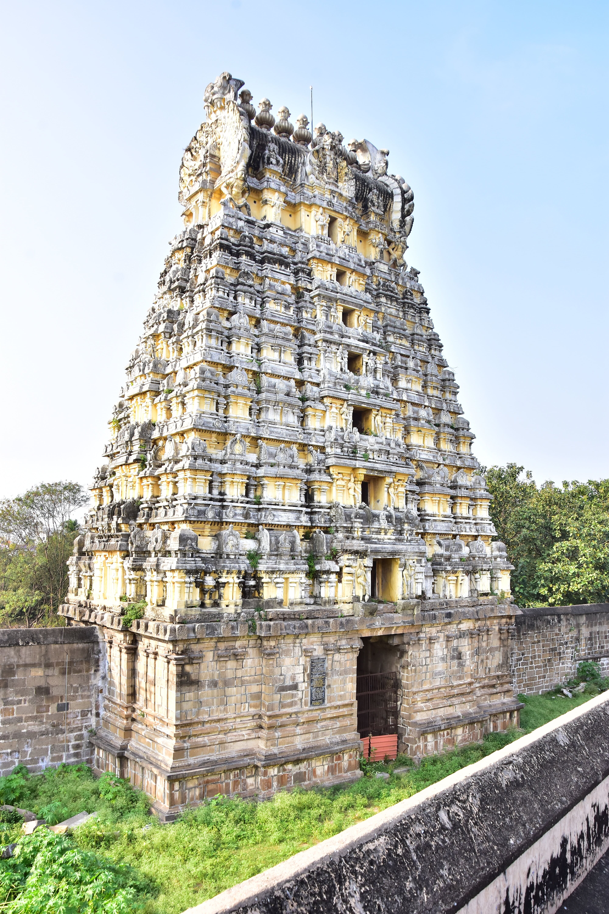
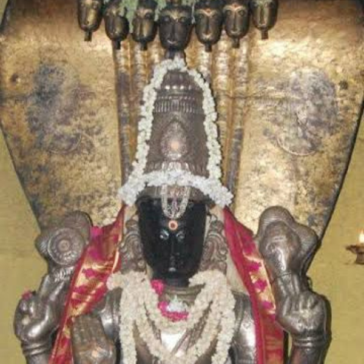
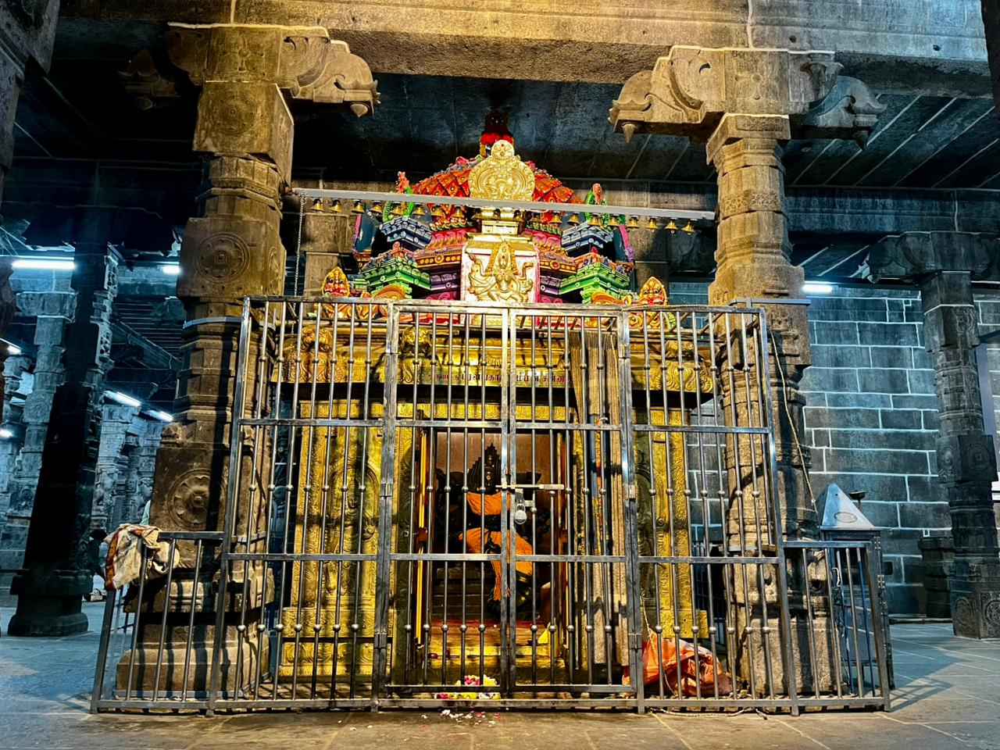
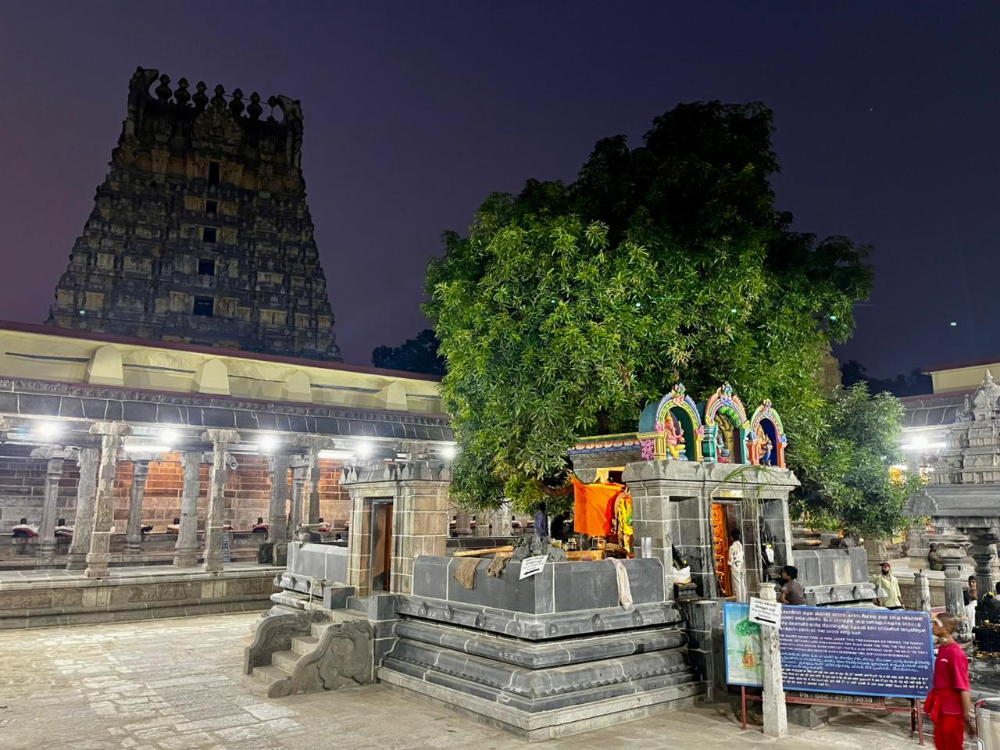

About


South Rajagopuram has 9 tiers with a height of 192 feet, width 82 feet and length 115 feet. It is one of the tallest south-facing Rajagopurams. The kalkaram is made of granolithic stones showcasing Vijayanagara architectural excellence.

Constructed during the Pallava era (600–650 CE), located at the 3rd praharam. It is a 7-tier Gopuram standing 34.90 feet tall and serves as the entrance to the 1000 Pillar Mandapam.

Located on the western side of the temple complex. Built during the Pallava era (600–650 CE), this 7-tier Gopuram provides access from the 3rd to 4th praharam.

In the eastern part of the first prakara there are Vadapal Nallakambar, Surya Murthy and Nilatunda Perumal. Anointed with good cumber urdutra. On the north prakara wall of Thirumanchanak well, during the reign of Maravarman Kulasekara Panth, there is a message painted in the time of the Kallakambara of Kandayatarayar burning in Thirumunbu, thirty-two cows for each Tirunanda lamp, and one hundred money for Rishabha and Sribandarat. Suryamurthy is standing in the kolam with beauty. In Nilatunda Perumal Sannidhi, two Thirumal Thirumenis are seen in the standing golam. One of these is Suthiyalam. Their heads have the image of a mitu naga spread out. This Perumal sannidi is one of the hundred and eight divya desas of the Vaishnavas. It is one of the fourteen Divvi Desams in Kanchi. May the Lord relieve Mahavishnu of the heat during his drinking of nectar in the ocean of Tirupa After meditating in the light direction, the moonlight on Lord Shivas head fell on Vishnu and the heat got rid of him and he got peace and got the name Nilatunda Perumal. Phraithuntawar Satayai, Perunganchi MPinjnagane! sang Upper. Thirumangaiyazhwar praised this Lord as Nilat Tingal Tundatta as the light of the crescent moon wearing Shivas satail dissipated the heat of the silk Tirumal.

There is a separate shrine for this Ambika in the 2nd prakaram. Ambika here is known as the power of the deluge of the goddess who protects the world from depression and destruction. The Pralayanath Ilingam in the temple is on the left side of the inner circle to commemorate the deity worshiped by this Shakti. Pralaya Kala Shakti carries weapons in seven hands and rests one hand on her left thigh. Aadi Pooram special abhishekam, decoration and worship are performed on Pooram Nakshatra in the month of Aadi. On Navratri days, special abhishekam, decoration and worship are done to Pralaya Kala Shakti. And to cool down the summer heat of the month of Chitra, Ila Neer Abhishekam is best done annually. No other temple in Kanchi has this power. It is said that this power stopped the overflowing flood while Umayammai was worshiping the Lord.

It is famous for having a mango tree as its main tree became Ambaram. Makarats hind rakaram is not hypnotized in tamil. According to the vernacular rule, Amram is derived from the verb Ekamennum and Ekambaram. Ekambaram is Maruvirtu as Ekambam and Kambham. It ranks first among the seven pearling sites. Due to the survival of the trade, Tiruvottiyur crossed the border This is the place where Lord gave sight in his left eye to Sundaramurthy Nayanar, who lost both eyes. Kadavaragone Nayanar, Thirukuripupu Thanda Nayanar, the Iyads who sang Thala Venbhakas, Sakya Nayanar is the Nayanmar. Here there are lingams painted by Brahma, Vishnu and Urudhara. They are known as Vellakampam, Kallag Kampam and Nalla Kampam respectively.For Ikkachi Ekamba There are only twelve Padhikams in Thirumyam. These were taught by three of the four religious leaders. Along with Kachiyekamba, there are six temples including Kachi Mertalali, Kachionakanthanarli, Kachinarikaraikkadu, Kachiyanegathangavatam and a burial ground called Kachi Mayanam. Among these, Kachimayanam is located in front of the flag tree in Tirukkachi Ekamba.